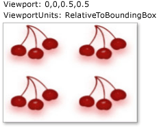
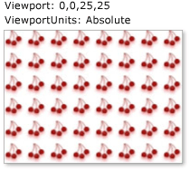

Практическое руководство. Установка размера плитки для объекта TileBrush
В этом примере показано, как установить размер мозаики для TileBrush. По умолчанию TileBrush создает один фрагмент, который полностью заполняет область закрашивания. Это поведение можно переопределить, задав Viewport и ViewportUnits свойства.
Viewport Свойство определяет размер мозаики для TileBrush. По умолчанию значение Viewport свойство является относительно размера закрашиваемой области. Чтобы сделать Viewport свойство указывать абсолютный размер мозаики, задайте ViewportUnits свойства Absolute.
Пример
В следующем примере используется ImageBrush, тип TileBrush, для заполнения прямоугольника мозаикой. В примере каждая Плитка 50% на 50 процентов от области вывода (прямоугольник). В результате прямоугольник заполняется четырьмя проекциями изображения.
На следующем рисунке показан результат выполнения этого примера:

//
// Create an ImageBrush and set the size of each
// tile to 50% by 50% of the area being painted.
//
ImageBrush relativeTileSizeImageBrush = new ImageBrush();
relativeTileSizeImageBrush.ImageSource =
new BitmapImage(new Uri(@"sampleImages\cherries_larger.jpg", UriKind.Relative));
relativeTileSizeImageBrush.TileMode = TileMode.Tile;
// Specify the size of the base tile.
// By default, the size of the Viewport is
// relative to the area being painted,
// so a value of 0.5 indicates 50% of the output
// area.
relativeTileSizeImageBrush.Viewport = new Rect(0, 0, 0.5, 0.5);
// Create a rectangle and paint it with the ImageBrush.
Rectangle relativeTileSizeExampleRectangle = new Rectangle();
relativeTileSizeExampleRectangle.Width = 200;
relativeTileSizeExampleRectangle.Height = 150;
relativeTileSizeExampleRectangle.Stroke = Brushes.LimeGreen;
relativeTileSizeExampleRectangle.StrokeThickness = 1;
relativeTileSizeExampleRectangle.Fill = relativeTileSizeImageBrush;
В следующем примере создается ImageBrush, задает его Viewport для 0,0,25,25 и его ViewportUnits для Absoluteи используется для закрашивания другого прямоугольника. В результате кисть создает мозаику размером 25 пикселей в ширину и 25 пикселей в высоту.
На следующем рисунке показан результат выполнения этого примера:

//
// Create an ImageBrush and set the size of each
// tile to 25 by 25 pixels.
//
ImageBrush absoluteTileSizeImageBrush = new ImageBrush();
absoluteTileSizeImageBrush.ImageSource =
new BitmapImage(new Uri(@"sampleImages\cherries_larger.jpg", UriKind.Relative));
absoluteTileSizeImageBrush.TileMode = TileMode.Tile;
// Specify that the Viewport is to be interpreted as
// an absolute value.
absoluteTileSizeImageBrush.ViewportUnits = BrushMappingMode.Absolute;
// Set the size of the base tile. Had we left ViewportUnits set
// to RelativeToBoundingBox (the default value),
// each tile would be 25 times the size of the area being
// painted. Because ViewportUnits is set to Absolute,
// the following line creates tiles that are 25 by 25 pixels.
absoluteTileSizeImageBrush.Viewport = new Rect(0, 0, 25, 25);
// Create a rectangle and paint it with the ImageBrush.
Rectangle absoluteTileSizeExampleRectangle = new Rectangle();
absoluteTileSizeExampleRectangle.Width = 200;
absoluteTileSizeExampleRectangle.Height = 150;
absoluteTileSizeExampleRectangle.Stroke = Brushes.LimeGreen;
absoluteTileSizeExampleRectangle.StrokeThickness = 1;
absoluteTileSizeExampleRectangle.Fill = absoluteTileSizeImageBrush;
Следующий пример является частью большого примера. Полный пример см. в разделе пример использования кистей.
Несмотря на то, что в этом примере используется ImageBrush класс, Viewport и ViewportUnits свойства ведут себя идентично для других TileBrush объектов, то есть для DrawingBrush и VisualBrush. Дополнительные сведения о ImageBrush , а другой TileBrush объектов, см. в разделе Рисование с помощью изображений, рисунков и визуальных элементов.